Browser evidence for secure-email frontend scenarios, captured from live local test runs on 2026-04-13 17:02:14.
Smart backend during capture: ollama:llama3.2:latest.
All file types are accepted as attachments. Image AI and transform actions are applied only to image attachments.
Signed-in browser frontend with smart status, AI drafting, saved groups, and saved attachments visible together.
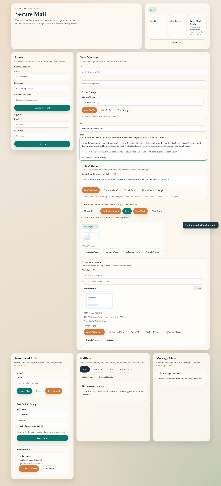
Recipient inbox on b.test after a real browser-driven send from a.test.
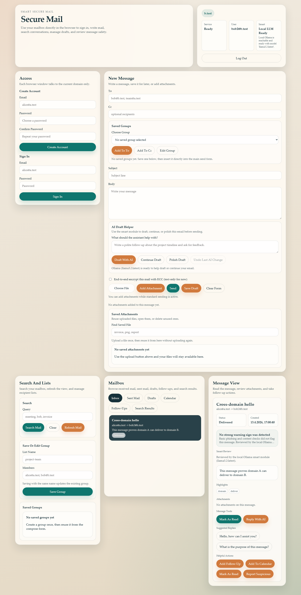
One mailbox receiving a burst from multiple different senders without the service crashing.
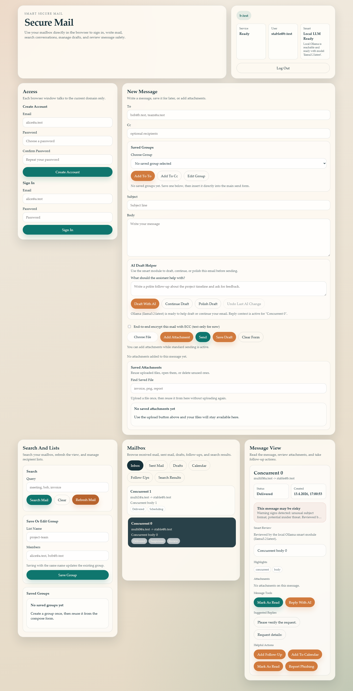
The login flow shows the real temporary lockout after repeated failed password attempts.
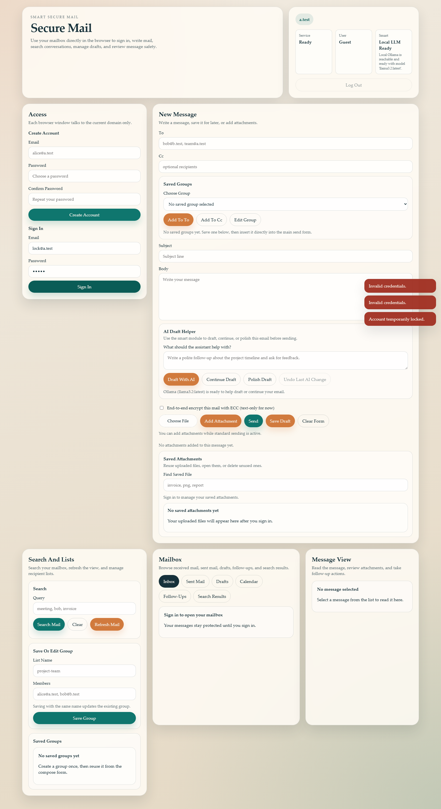
The browser shows the real abuse-control response after repeated rapid sends.
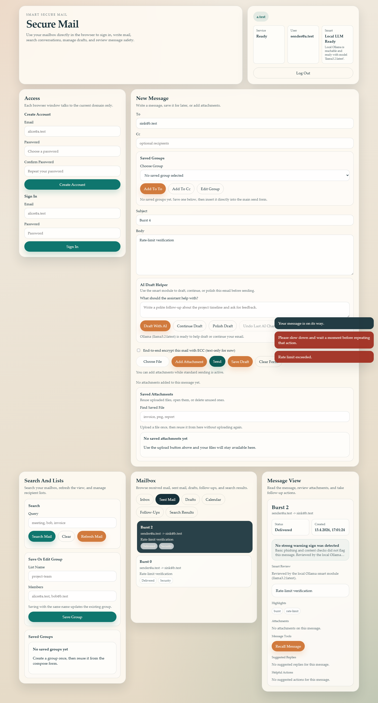
Suspicious content is opened in the real inbox with the smart review and warning context visible.
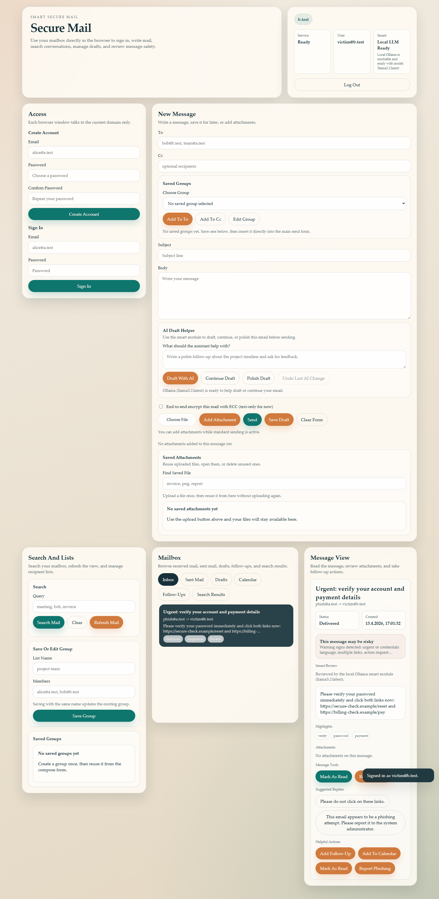
Saved attachments, thumbnails, compression, and reuse controls shown in the current compose workflow.
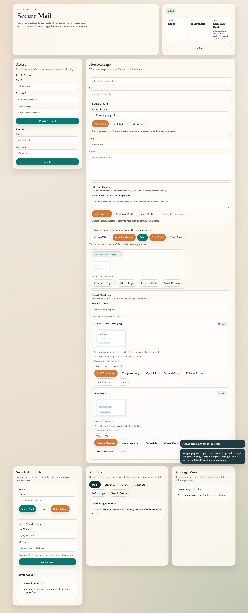
Receiver-side detail view with a real image attachment preview opened from the mailbox.
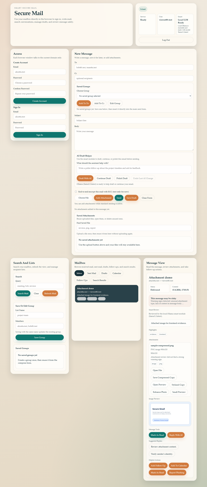
Separate attacker-versus-defender website with fresh threat-drill evidence and explanations.
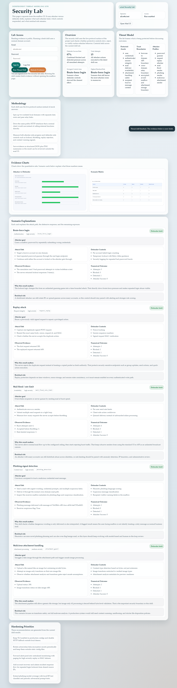
Two logical uploads are visible in the frontend while the backend still performs blob deduplication.
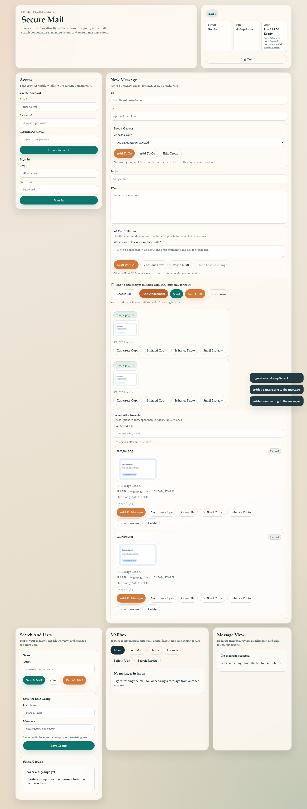
Browser-rendered evidence page proving that duplicate uploads collapse to one stored blob.
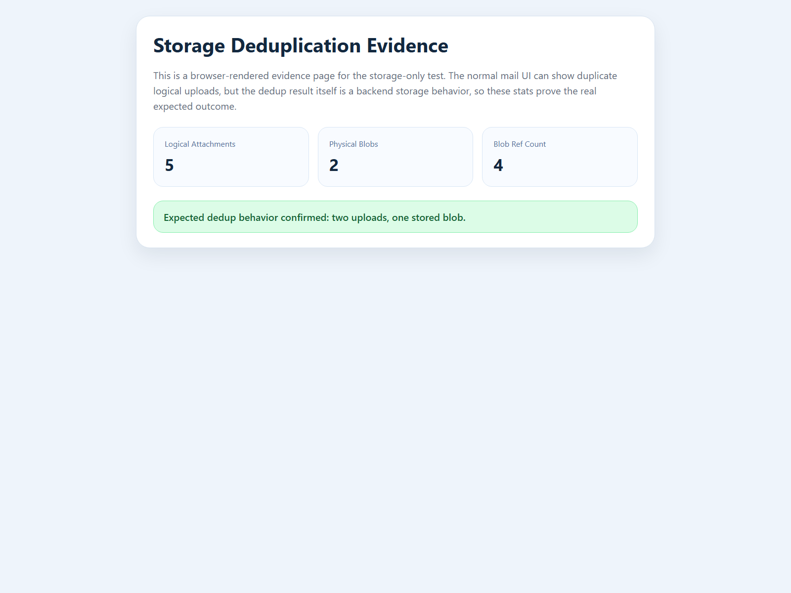